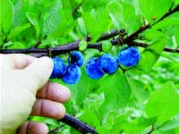

Peewee Kiwis And Other Sweet Delights
These uncommon fruits are tasty and easy to grow.
By Lee Reich
June/July 2004
Hardy kiwifruits are grape-size, borne in
clusters and can be eaten just like grapes, skin and all. They
have the same sparkling green flesh and a taste similar to
supermarket kiwifruits, except hardy kiwifruits are much sweeter
and more flavorful, and much more cold-hardy - down to
minus 25 degrees.
In the humid mountain forests of eastern Asia, where the plants are native, people have been eating kiwifruits for centuries. The twining vines, both males and females, clamber up trees and sprawl over the ground; a single male is capable of pollinating the fruit of up to eight nearby females.
The two main hardy species of kiwifruits, Actinidia arguta (hardy) and A. kolomikta (super-hardy), are both grown in North America, primarily for their ability to drape arbors and pergolas with their extremely handsome foliage (see photo at right). Leaves of A. arguta look similar to those of apple trees, except they remain a vibrant green all summer and are attached to stems that grow on decorative red stalks.
Leaves of male A. kolomikta vines and, to a lesser extent, females, have silvery-white and pink variegations so distinctive that they look as if an artist painted them. The cup-shaped, pale golden flowers of either species are attractive, but usually they remain hidden and unappreciated beneath the foliage.
The popularity of hardy kiwifruit for eating has soared so rapidly, they have yet to receive a widely acknowledged common name of their own. As an ornamental, some nurseries sell the plant as "bower vine," so perhaps "bowerberry" is an appropriate name. "Kuwi" has been suggested, a name that combines the common and botanical names. A. kolomikta also is marketed as "Arctic Beauty" kiwifruit or grape kiwi. "Peewee kiwi" and "Piwifruit" are other possibilities. A. kolomikta fruits are smaller and ripen earlier than those of A. arguta, and they sometimes drop when ripe. A. kolomikta plants also are less rampant.
Guest Expert on Mother’s
Online Forums
Uncommon Fruits author Lee Reich, who gardens in New Paltz, N.Y., will be a guest expert on Mother’s online Forums during June and July. Reich has researched fruits for the U.S. Department of Agriculture and Cornell University. The new edition of his book Uncommon Fruits for Every Garden has just been released. He also authored Weedless Gardening, one of the most popular books we offer. Both books are available on Mother’s Bookshelf, Page 111.
If you would like to join Reich in a discussion about backyard fruit-growing and weedless gardening, go to www.MotherEarthNews.com and click on “Forums.”
A number of varieties of both species are available. Among the A. arguta cultivars is "Anna," a Russian selection whose full name is "Ananasnaja." It's very reliable, although it just barely ripens in northern areas, including my Zone-5 New York garden. "Issai," from Japan, ripens similarly late and is somewhat self-fertile but not very cold-hardy.
Very tasty and earlier (about three weeks earlier) ripening varieties include "Geneva," "MSU" (Michigan State University) and "Dumbarton Oaks." All three were propagated from old ornamental vines in the United States. Among the A. kolomikta kiwifruits on the market are such varieties as "September Sun" and "Krupnopladnaya," which translates as "large fruit.'
Beauty and flavor come at only a small price. These plants need some care, but don't require the pesticide sprays demanded by many common fruits. Abundant sunlight (the more the better) ensures best annual production. Give A. kolomikta, especially males (whose variegated foliage scorches in full sunlight) a bit of shade in climates where sunlight is very intense. The soil must be well drained; if not, plant the vines on broad, raised mounds.
Training and Pruning
Plants look and yield best if trained to some sort of support that is sturdy and that allows the vines adequate room to ramble. I train my vines on a trellis like commercial kiwifruit growers use, which consists of five parallel wires stretched along the top of 6-by-5-foot T-bar supports spaced 15 to 20 feet apart. At some sacrifice to fruit production, but with perhaps a gain in beauty, the vigorous vines can be coaxed up a variety of other structures such as gazebos, pergolas or even along split rail fences.
Hardy kiwifruits are a bit cold tender their first two or three years in the ground. I've wrapped my young plants with corn stalks, burlap, pipe insulation and tree wrap material to shade their developing trunks and abate the fierceness of winter cold. Remember, in the wild the trunks of hardy kiwifruit are rarely exposed to full sunlight.
The goals in training and pruning kiwifruit vines are to make a potentially tangled mass of rampant shoots manageable and easy to harvest, and to keep stems bathed in enough light to remain fruitful. Pruning also stimulates new growth, which is important because fruits are borne only toward the bases of new shoots that grow from 1-year-old canes (similar to grapes).
An established vine consists of a trunk, permanent cordons (branches) and fruiting arms. First, develop the trunk by training a vigorous shoot against a 1- to 2-inch-diameter pole, tying the vine at intervals.
When the trunk reaches just above the center wire of the trellis - during either the growing season or the dormant season - develop two permanent cordons by cutting the trunk to just below the height of the middle wire and training the two shoots that grow from the topmost buds on the severed trunk along the middle wire in opposite directions. The first dormant season after the cordons have formed, cut off all excess growth along the trunk and shorten the cordons to about 2 feet.
Shorten the cordons each dormant season, leaving 2 feet of the previous season's growth, until they reach their allotted length of about 7 feet in each direction along the wires. After that, cut back the cordons each dormant season to a length of 7 feet.
Fruiting arms will grow out perpendicular to and drape over the wires. The arms should be spaced a foot apart on opposite sides of the cordon; prune away any excess arms during the dormant season. Tie the arms to the side wires to keep them from blowing around, unless they are too stiff to be brought to the wire. The first crop will form on shoots directly from these arms; future crops will form on shoots from laterals, then sublaterals growing off these arms.
After training is complete, annual pruning consists of shortening cordons each winter, as described above, and then maintaining a supply of fruiting arms. Cut laterals on fruiting arms to about 18 inches long. When a fruiting arm with its lateral, sublateral and subsublateral shoots is 2 or 3 years old, cut it away to make room for a new fruiting arm.
Summer pruning keeps the vines in bounds, maintains order and lets the shoots bask in light. Repeat summer pruning as needed through the growing season, and pay special attention to the vine during the critical, early days of the growing season each year. Keep trunks clear of shoots, cut back excessively rampant shoots to short stubs and cut away tangled shoots. Male plants are needed only for their flowers, so severely prune them right after they bloom: Remove about 70 percent of the previous year's growth.
Hardy kiwifruits need annual pruning for maximum fruit production, but vines will fruit with yearly, undisciplined whacking aimed at keeping them in bounds. That was all the pruning imposed on those hardy kiwifruits planted as ornamentals that you still find growing on old estates. These vines happily and haphazardly clothe pergolas with their small, green fruits hanging - not easily accessible nor in prodigious quantity - beneath the leaves.
The Harvest
A harvest of 100 or more pounds of fruit is possible from a single hardy kiwifruit plant, and harvests of more than 200 pounds from a mature vine are not uncommon. Harvest the fruit slightly underripe for storage: Clip off whole clusters just as their first fruits ripen. Not all fruits on a plant, even in a single bunch, ripen together, so it's best to sample a few fruits for maturity. Picked soft, with their stems attached, hardy kiwifruits keep for a couple of weeks; firm, they'll keep six weeks or more, slowly ripening to a tasty stage.
Uses of these plants need not end with the fruit. What to do with all those prunings? The leaves reputedly are good food for pigs, and the stalks are rich in a glue that leaches out with water, leaving fibers that can then be made into paper.
The plants also have an effect on cats similar to catnip, and the most novel use in this regard is in Chinese zoos, where zookeepers use an infusion of the leaves to sedate "large cats."
A Sampler of Uncommon Fruits
Hardy kiwifruits are but one of a number of uncommon fruits grown by innovative gardeners and farmers. Here's a tasty sampling from Lee Reich's book, Uncommon Fruits. All can be grown in most of the country and are great for edible landscaping. They are pest-resistant, and most don't even need pruning. Most importantly, they're truly delectable.
Medlar (Mespilus germanica)
Medlars aren't the most attractive fruits, but their flavor is supreme, resembling rich applesauce laced with spices and wine. The handsome, small tree bears large white or slightly pink blossoms that open late, without the need for cross-pollination. The trees are quick to bear, often doing so the year after planting. Harvest is in autumn, at which time the 1 1/2- to 2 1/2-inch fruits are brought inside to soften for two to eight weeks, depending on temperature, before being eaten. Medlars are virtually pest-free and require little or no pruning. They were very popular during the Middle Ages.
Sources: Burnt Ridge, Edible Landscaping, Forestfarm, Hidden Springs, Oikos, One Green World, Raintree
Beach Plum (Prunus maritima)
Beach plums are not just for beaches, and not just for jelly. These fruits are cherry-sized with a plum-like flavor that makes them tasty as a fresh-off-the-branch snack. Fruit color ranges from purple to deep blue, red and even yellow; the lighter the color, the less tannin in the taste. I grow beach plum selections that are as tasty as conventional plums, except that they are smaller and ripen in late summer. The plants are shrubby and pest-resistant. Cross-pollination is needed and bearing is somewhat erratic, but every spring the branches are full of small white blossoms, followed by the dangling ripe fruits, profuse enough to put on a show of their own.
Sources: Forestfarm, Oikos, Raintree
Pawpaw (Asimina triloba)
Also called the "poor man's banana," pawpaws tolerate cold to below minus 25 degrees. The large leaves turn a clear yellow in autumn. Spring's purple flowers precede 4- to 5-inch fruits that hang in bunches like bananas. Within the pawpaw's greenish-yellow skin, which becomes speckled and streaked with brown when ripe, is a creamy-white, custardy flesh. The flavor is similar to bananas with vanilla custard, pineapple and mango mixed in. Plant at least two different varieties for cross-pollination. Pawpaws ripen in late summer and fall. "Pennsylvania Golden" and "Zimmerman" are two good varieties.
Sources: Burnt Ridge, Edible Landscaping, Forestfarm, Hidden Springs, Nolin River, Oikos, One Green World, Peterson, Raintree
Juneberries (Amelanchier spp.)
Ripening in late June, juneberry fruits resemble blueberries, to which they are often compared. The best juneberries are juicy and sweet, with the richness of sweet cherry with a hint of almond. These self-fertile trees and bushes are not finicky about soil and are year-round beauties. Early spring brings clouds of white blossoms, and summer brings soft, green leaves that in autumn burst into shades of purple, orange and yellow. The striated, gray bark and the neat form of the plants make them ornamental through winter, too.
Sources: Burnt Ridge, Edible Landscaping, Forestfarm, Hidden Springs, Oikos, Raintree
Che (Cudrania tricuspidata)
Meld together all the characteristics of fresh figs and mulberries - both relatives of che - and you end up with something close to a che fruit. Che is a round fruit, 1 to 1 1/2 inches across. It has a maroon skin with a rich red interior, a slightly chewy texture and a few edible seeds. The flavor is most definitely fresh fig plus mulberry, but not as rich as the fig nor as sweet as the mulberry. This mostly self-fertile, small tree tolerates almost any soil as long as it has sun, and it flowers late enough not to be bothered by spring frosts. It's also quick to bear, mine yielded its first fruits the year after planting. Leaves of this plant have been used in China to feed silkworms, to produce a silk for lute strings, which make sounds of particular clarity.
Sources: Edible Landscaping, Hidden Springs, Raintree
Shipova (Sorbopyrus auricularis)
This hybrid of mountain ash and pear retains the best of its parents. With fat, woolly buds, this large, self-fertile tree resembles the magnolia in winter. Come spring, it's bedecked with big clusters of white blossoms and downy-white leaves. A close flavor comparison would be with a pear. The buttery flesh - a bit more meaty than a pear - melts with each bite to fill the mouth with semi-solid, sweet and fragrant ambrosia. The tree takes a number of years to begin bearing, but needs little pruning or other care. The fruits are about 2 inches in diameter when fully mature.
Sources: Burnt Ridge, One Green World, Raintree
Raisin Tree (Hovenia dulcis)
When you eat from the raisin tree, you bypass the dark, dry, pea-sized fruit itself to nibble instead on the fruit stalks. Unlike other fruits, whose stalks remain gracefully thin, the raisin tree's stalks swells into gnarled, meaty masses. They're small but borne in massive quantities at the ends of the twigs, and they taste more like candied walnuts than raisins. This self-fruiting tree resembles linden and needs little in the way of care. The "fruit" ripens in autumn; don't rush the harvest, though, or the stalks will taste like nothing more than stems.
Sources: Forestfarm, Oikos, One Green World, Raintree
American Persimmon (Diospyros virginiana)
A thoroughly ripened persimmon is a fruit of the gods (which is what the botanical name means). To get fruit from most varieties, you need a separate male tree, but the variety "Szukis" will bear without cross-pollination. The best-tasting persimmons are like wet dried-apricots drizzled in honey. The tree leafs out late, but the leaves look as healthy and as fresh all summer as they do in spring. Orange fruits cling to the leafless branches like edible Christmas ornaments until December. Make sure to plant a variety that both ripens during your growing season and is known to taste good.
Sources: Burnt Ridge, Edible Landscaping, Forestfarm, Hidden Springs, Nolin River, Oikos, Raintree
Uncommon Fruit Sources
Burnt Ridge Nursery* 432 Burnt Ridge Road Onalaska, WA 98570 (360) 985-2873 landru.myhome.net/burntridge
Edible Landscaping* 361 Spirit Ridge Lane Afton, VA 22920 (800) 524-4156 www.ediblelandscaping.com
Forestfarm * 990 Tetherow Road Williams, OR 97544-9599 (541) 846-7269 www.forestfarm.com
Hidden Springs Nursery* 170 Hidden Springs Lane Cookeville, TN 38501 (931) 268-2592
Nolin River Nut Tree Nursery 797 Port Wooden Road Upton, KY 42784 (270) 369-8551 www.nolinnursery.com
Oikos Tree Crops P.O. Box 19425 Kalamazoo, MI 49019-0425 (269) 624-6233 www.oikostreecrops.com
Northwoods Nursery/ One Green World* 28696 South Cramer Road Molalla, OR 97038-8576 (877) 353-4028 www.onegreenworld.com
Peterson Pawpaws (pawpaw seeds and plants) P.O. Box 1011 Harpers Ferry, WV 25425 (304) 535-3125 www.petersonpawpaws.com
Raintree Nursery* 391 Butts Road Morton, WA 98356 (360) 496-6400 www.RaintreeNursery.com
*Source for hardy kiwifruits, Actinidia arguta and A. kolomikta.
|
This fruit sampler from Edible Landscaping Nurseries, Afton, Va., features American persimmons (far left), hardy kiwifruits (bottom center), medlars (bottom right) and pawpaws (middle right). |
Hardy kiwifruits, bottom, have the same sparkling green flesh as the bigger supermarket kiwifruits, but they taste sweeter and more flavorful. |
|
|
|
|
 |
|
|
|
|
|
|
|
 |